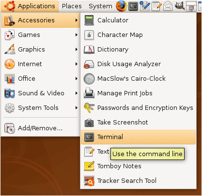
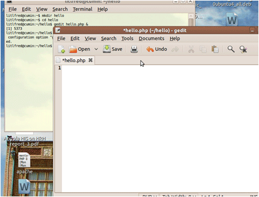
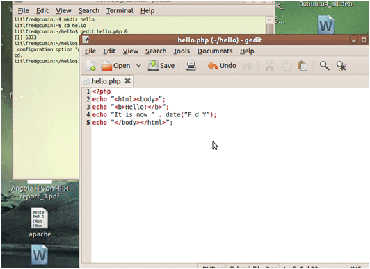

Create PHP Program
iHRIS Administrator - Level I, © IntraHealth International, CC BY 4.0. Originally offered at hrhresourcecenter.org/elearning (CapacityPlus). Licence stated by its author, the folio owner, 2026-10-09.
1. Create a PHP Program
This module will outline the process of creating a simple PHP program including:
- installing the LAMP stack
- creating a basic hello.php PHP program in the home directory that will tell the time and say hello
- making this program available to the web server
2. Install the LAMP Stack
To install the base LAMP (Linux, Apache, MySQL, and PHP) stack on an Ubuntu/Linux computer, open a terminal to interact with your computer via the command-line.
Navigate to the "Applications" menu, go to "Accessories", then "Terminal" to access the command line.

3. Install the LAMP Stack
Once the terminal is open and there is a command prompt, type: sudo apt-get update sudo apt-get install php5 mysql-server apache2
This will update the list of available software and install the LAMP stack.
"sudo" means the programs will run with administrator (also called "root") privileges, so you will be prompted for your password on the first command. This password is probably the password of your user account, the one you use to login with.
While you are installing mysql it may ask you to choose a password. You should be sure to remember this for later when you need to create a database.
4. Create a Directory
In the terminal, make a change to the home directory with the command: cd ~/
Make a new directory there called "hello" with either one of the following commands: mkdir hello or mkdir ~/hello
Go into the new directory with either one of the following commands: cd hello or cd ~/hello
5. Create hello.php
Now create and edit a new file "greetings.php" in the hello directory.
In the command line type using either one of the following commands: gedit ~/hello/greetings.php & or cd ~/hello && gedit greetings.php &
"gedit" is the name of the editor.

6. Say Hello in PHP
In the editor, type the following code including the spaces and punctuation: <?php echo "<html><body>"; echo "<b>Hello!</b>"; echo "It is now " . date("F d Y"); echo "</body></html>";
Save it.
To see this file on the command line type: ls -l ~/hello

7. Make hello.php Available
"hello.php" is in the hello sub-directory of the home directory. However, web pages and php code live in the directory "/var/www". You will need administrator access to change it.
To link the hello directory so that it also is under "/var/www" type the command: sudo ln -s ~/hello /var/www
To see the hello.php file type either one of these commands: ls -l ~/hello or ls -l /var/www/hello
8. Run the PHP Program
The PHP program runs whenever it is accessed by the Apache web server.
Your computer is named "localhost".
Open a web browser.
Because the greetings.php file is linked under "/var/www/hello/greetings.php", run the program by typing the following into the URL line of your web browser: http://localhost/hello/greetings.php
Source
Lesson in Section 1 of iHRIS Administrator - Level I, Moodle course module cm-47; library/ihris-admin-course/modules/cm-47.md.